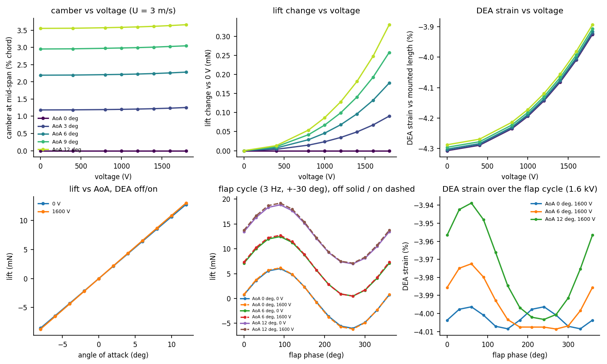

Active membrane wing
A hyperelastic membrane wing with embedded rolled dielectric elastomer actuators (DEAs) and optional linear-elastic reinforcement, loaded by quasi-steady thin-airfoil aerodynamics. Every number on this page is computed live by the same Python file (model.py) that is checked against measurements and analytical solutions below. Nothing is animated, fitted on the fly or randomised. It is a model, not measured flight data.
Out-of-plane deflection, top view
Root on the left, leading edge at the top, drawn on the deformed in-plane positions (a free trailing edge visibly scallops). Red lines: DEAs; dark lines: reinforcement; hatched edges are clamped.
Chord profile at mid-span
Spanwise distribution
Experiment predictions
Each sweep re-solves the current design point by point (warm-started), so curves can be compared directly with measurements: camber from a side camera or laser line at mid-span, lift from the load cell, DEA strain from markers on one DEA, trailing-edge deflection from video, total chord tension from the clamp force on the bench (set U = 0). Sweeps use the mesh set in the panel; a 12 × 6 mesh is about four times faster and changes lift by under 3 % (see V7).
Precomputed predictions for the default wing

Default wing (70 × 35 mm, anisotropic membrane 180 µm, pre-stretch 1.03, four chordwise DEAs at 1.10, free trailing edge with PET cord, U = 3 m/s). Data: predictions.csv. Note the lift change is antisymmetric in AoA and zero at 0°: with no aerodynamic load there is no camber for the DEAs to modulate.
Governing equations
All quantities SI. Each block names the function in model.py where it is implemented.
1. Membrane kinematics Wing.membrane
Reference (unstretched) coordinates $\mathbf X\in\mathbb R^2$, current $\mathbf x\in\mathbb R^3$, constant-strain triangles. Pre-stretch: the membrane is cut smaller, $\mathbf X = (x_\text{frame}/\lambda_{s},\,y_\text{frame}/\lambda_{c})$, and clamped edges are held at the frame.
with fibre directions $\mathbf a_s=(1,0)$ (span) and $\mathbf a_c=(0,1)$ (chord).
2. Constitutive law MATERIALS, calibrate.py
Calibration on the measured uniaxial unloading curves (engineering stress), where $P=2(\lambda-\lambda^{-2})W_1+2\lambda W_4$ is linear in the constants (non-negative least squares). Anisotropic membrane: matrix fixed to $0.577\times$ the Wacker P6760 fit (measured matrix and its volume fraction), fibre families fitted to the rest. Valid to $\lambda=1.22$ (the chordwise curve locks up above). Wrinkling: negative principal values of $\mathbf S$ are set to zero (a membrane carries no compression).
| Material | C10 (Pa) | C20 (Pa) | k1 chord | k1 span | fit rms |
|---|---|---|---|---|---|
| Anisotropic membrane | 3252 | 9140 | 14 264 | 6 808 | 0.28 / 0.38 kPa |
| Wacker P6760 | 5636 | 15 841 | – | – | 0.41 kPa |
| DragonSkin 20 | 63 051 | 0 | – | – | 0.40 kPa |
| DEA silicone (bars) | 178 426 | −6 023 | C30 = 4 234 | from your bending.m | |
3. Equilibrium Wing.residual
Membrane tension reported in the current configuration: $\mathbf n=\dfrac{t_0}{\sqrt{\det\mathbf C}}\,\mathbf F\mathbf S\mathbf F^{\mathsf T}$ (N/m), area-averaged. "Total chord tension" adds $\sum N_\text{DEA}/b$.
4. Rolled DEA Wing.bar_forces
Each rolled DEA is a bar of reference section $A_0=w(t_\text{act}+t_\text{pass})$ bonded along a mesh line, mounted at pre-stretch $\lambda_\text{DEA}$ (reference length $=$ frame length$/\lambda_\text{DEA}$). Passive force from a uniaxial Yeoh bar; the Maxwell stress $\varepsilon_0\varepsilon_rE^2$ with the true field $E=V\sqrt\lambda/t_\text{act}$ acts on the current active section $v_\text{act}A_0/\lambda$:
$\Delta F$ is independent of stretch ($E^2\propto\lambda$ cancels the $1/\lambda$ area). $\eta=0.37$ is the measured/ideal blocked-force ratio on your bench (fig2); at 1.6 kV $\Delta F=7.83$ mN per DEA. If $N$ reaches zero the DEA is slack and further voltage does nothing (flagged). Breakdown check: $E=V\sqrt\lambda/t_\text{act}\lt E_\text{bd}$.
5. Reinforcement Wing.bar_forces
Bonded flush to the pre-stretched membrane (reference length = frame length). The optional trailing-edge cord is one spanwise reinforcement line on the free edge.
6. Aerodynamics Wing.glauert, Wing.cell_dcp, Wing.pressure_forces
At every spanwise station the deformed section is referred to its own LE–TE chord: $c_\ell$, $\xi=(y-y_\text{LE})/(y_\text{TE}-y_\text{LE})$, camber $z_r(\xi)=z-[z_\text{LE}+(z_\text{TE}-z_\text{LE})\xi]$, local incidence $\alpha_\ell=\alpha+\arctan\frac{z_\text{LE}-z_\text{TE}}{y_\text{TE}-y_\text{LE}}$, $\xi=\tfrac12(1-\cos\theta)$. Thin-airfoil theory with the exact integrals of the piecewise-linear camber line:
$\Delta C_p$ is averaged exactly over each mesh cell (so the leading-edge singularity is integrated, not sampled) and applied as a follower pressure normal to the deformed element: $\mathbf f_a=\tfrac13\,\Delta p\,\tfrac12(\mathbf x_2-\mathbf x_1)\times(\mathbf x_3-\mathbf x_1)$, with
The load depends on the shape and the shape on the load; both are solved together (static aeroelastic equilibrium). Attached flow only: a warning appears above 12°.
7. Flapping, quasi-steady Wing.flow_state, Wing.body_forces
8. Solver Wing.solve
Dynamic relaxation with kinetic damping: $m_i\dot{\mathbf v}_i=\mathbf R_i$ with fictitious masses $m_i=0.6\,S_i$ ($S_i$: Gershgorin bound on the nodal stiffness), velocities reset at every kinetic-energy peak, load ramped over 400 steps, aerodynamic load updated every 10 steps. Converged when $\max|\mathbf R|\lt 10^{-4}F_\text{ref}$. The DEA-on state starts from the DEA-off state.
9. Back-of-envelope authority (to check the numbers by hand)
Smeared theory replaces the DEAs by a uniform chord tension $T_c+nF/b$ and predicts $\delta w/w\approx-\delta T/T$. That overestimates authority when each DEA carries much more than the membrane strip beside it ($F\gg T_c s$, spacing $s=b/n$): the membrane between two DEAs sags under its own spanwise tension, and the DEAs only control the sag of the tendon line. With tributary width $s$:
Validation case V5 (0.3 Pa, $F=58.5$ mN, $\Delta F=7.8$ mN, $T_c=0.83$, $T_s=0.50$ N/m, $s=17.5$ mm, $c=35$ mm): $w_\text{tendon}\approx11\,\mu$m, $w_\text{between}\approx23\,\mu$m, so $\delta w/w\approx0.32\times10.7\%\approx3.4\%$. The FE gives 4.1 %, the exact discrete-tendon series 4.3 %, and smeared theory 11.3 %. Design consequence: more, closer DEAs (smaller $s$) or a stiffer spanwise membrane raise authority; making each DEA stronger alone does not.
Validation
Generated by validate.py; numbers in validation.json.

V1: constitutive law vs your measured uniaxial curves (fig1).

V3: DEA force drop in the FE equals the analytical Maxwell expression; calibration against the bench blocked force (fig2, five rolled DEAs).

V4: pre-stressed membrane under uniform pressure vs the Fourier series solution of $T\nabla^2w=-p$.

V5: DEA authority. FE vs an independent semi-analytical solution with discrete DEA tendons (all inputs analytical); dotted: smeared tension.

V6: aeroelastic chord vs an independent 1D string solved with thin-airfoil loading; Glauert loading vs exact.

V7: mesh convergence of lift and authority for the default wing, free and clamped trailing edge.
Known limitations
- Quasi-steady, attached-flow, strip-wise thin-airfoil aerodynamics with a simple 3D correction: no stall, no wake or added mass, no leading-edge suction separation.
- Membrane bending stiffness neglected (thin membrane); wrinkling by stress clamping, not a full tension-field theory.
- Calibration is from one specimen per direction (n = 1), uniaxial kinematics, up to stretch 1.22. DEA silicone constants from earlier fits; $\eta$ from the bench.
- With a free trailing edge, local camber depends on TE motion and converges more slowly than lift; use lift and DEA strain as the primary comparisons.
- Rectangular planform only. Fibres sit on mesh lines through the membrane mid-plane (no offset bending).
Code and data
- model.py: the model (runs in this page unchanged).
- calibrate.py: constitutive fits from the measured curves.
- validate.py: validation cases V1–V7.
- predict.py: predicted measurable quantities for the default wing; predictions.csv.
Local use: python model.py (one design point), python validate.py, python predict.py; needs numpy (validation also scipy, pandas, matplotlib).